La visión que acompaña el trabajo.
Ganadores de los eAwards México · Premio Estatal de la Juventud 2026Somos ingenieros en visión e inteligencia artificial. Creamos soluciones que acercan la tecnología a todos.
Alba nació intentando que una persona ciega supiera qué tiene enfrente. Ahí aprendimos a ver con máquinas; hoy llevamos esa visión a negocios, laboratorios y satélites.
Más allá de lo visible.
- Misión
- Creamos soluciones de visión e inteligencia artificial que acercan la tecnología a todos.
- Visión
- Un futuro en el que la tecnología nos permita ver más allá de lo que alcanzan nuestros ojos.
 Lo que ves
Lo que ves
Empezamos con unos lentes. Seguimos viendo más allá.
Somos un equipo de ingenieros. Empezamos con UNBLIND, lentes para personas con discapacidad visual, y hoy llevamos esa misma visión a negocios, a la industria y al espacio.
Desde 2021 ganamos los eAwards México y el Premio ILAN, que nos llevó a Israel; presentamos en Colombia, tuvimos mentoría de Simón Cohen, de Shark Tank México, y este año Alan Soubran, nuestro CEO, recibió el Premio Estatal de la Juventud en innovación.
En la prensa: Emprendedor y Universidad Anáhuac
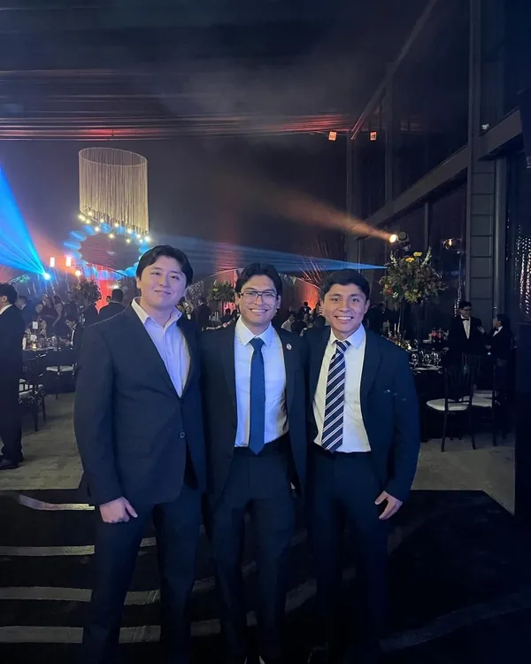
-
 2021Solve for Tomorrow · SamsungParticipación destacada con el primer prototipo de UNBLIND.
2021Solve for Tomorrow · SamsungParticipación destacada con el primer prototipo de UNBLIND. -
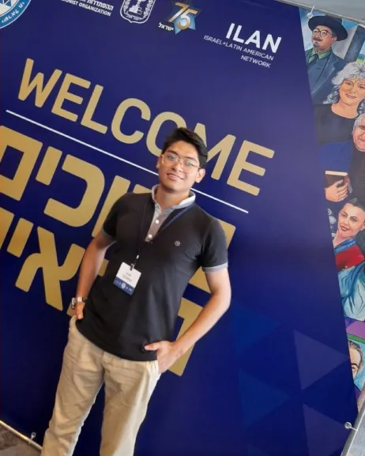
2022Premio ILAN a la Innovación UniversitariaPor UNBLIND. El premio incluyó un viaje a Israel.Leer la nota -
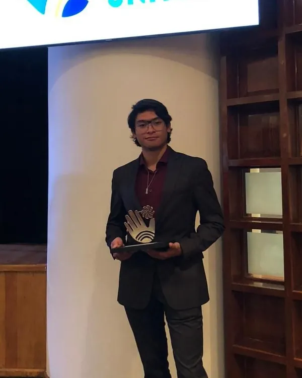
2023Premio UNITECReconocimiento obtenido por UNBLIND. -
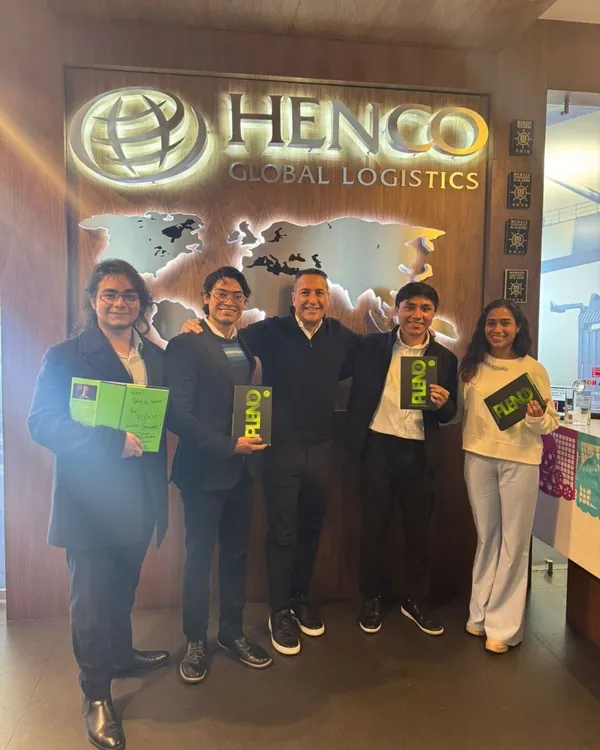
2024Simón Cohen · Shark Tank MéxicoMentoría con Simón Cohen, inversionista de Shark Tank México, poco antes de ganar los eAwards. -
 2024eAwards México · Fundación NTT DATAGanadores nacionales, con pase a la final global.Leer la nota
2024eAwards México · Fundación NTT DATAGanadores nacionales, con pase a la final global.Leer la nota -
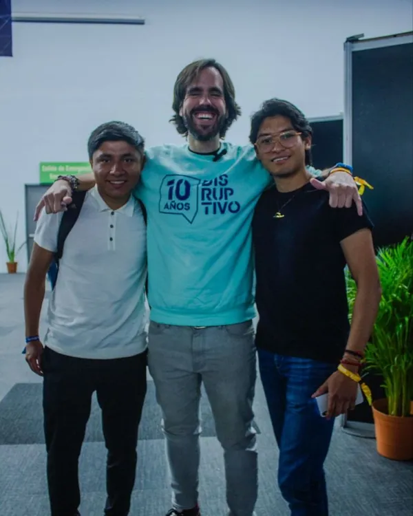
2025Talent LandGanadores en innovación tecnológica. En la foto, con Juan del Cerro. -
 2025Qualinn · Cali, ColombiaPresentamos UNBLIND con stand propio.
2025Qualinn · Cali, ColombiaPresentamos UNBLIND con stand propio. -
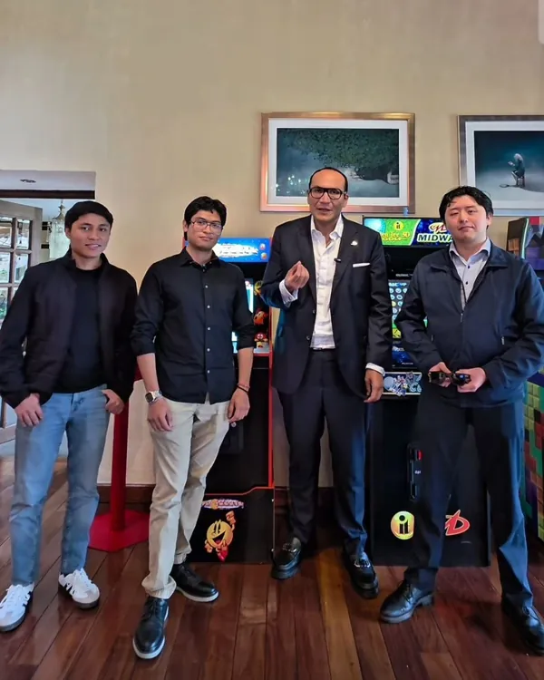
2026Copartank · CoparmexGalardonados a la innovación. En la foto, con el director de Coparmex. -
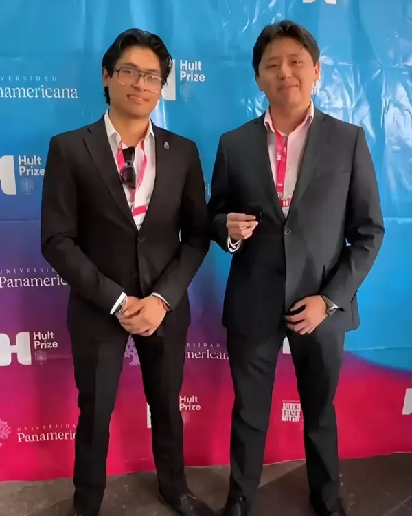
2026Hult PrizeGalardonados a la innovación. -
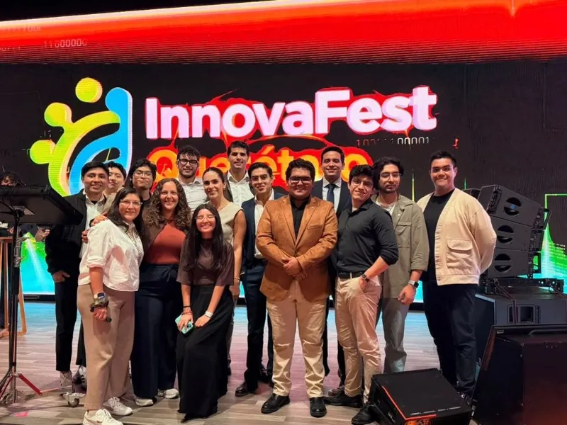
2026InnovaFest QuerétaroLlevamos a Alba con stand propio. -
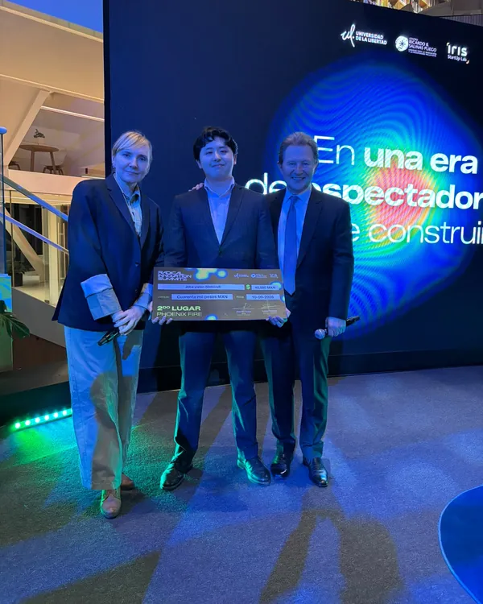
2026Phoenix Fire · Centro Ricardo B. Salinas PliegoSegundo lugar con UNBLIND. -
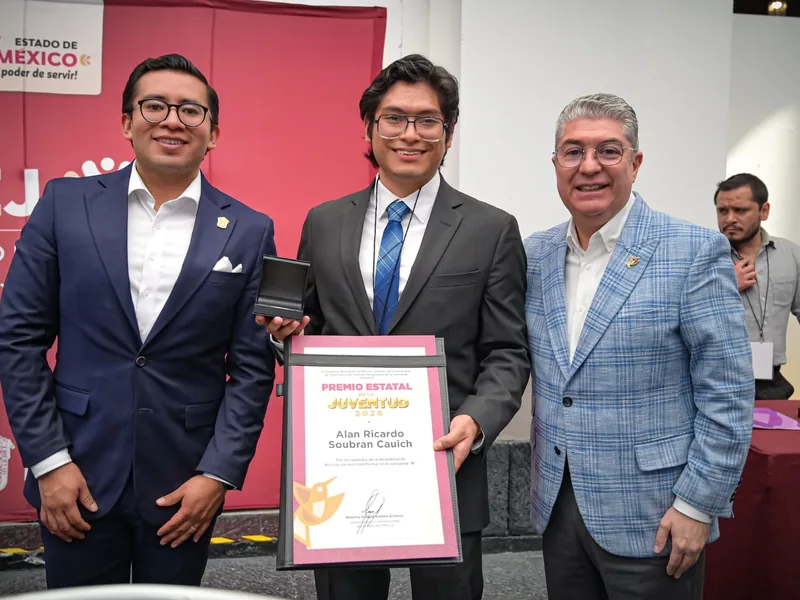
2026Premio Estatal de la Juventud · Estado de MéxicoAlan Soubran, CEO de Alba, ganó la modalidad «Innovación que transforma».
Donde hemos participado y quienes nos han impulsado
- ILAN
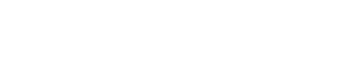
- Centro Ricardo B. Salinas Pliego
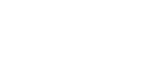
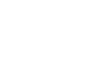
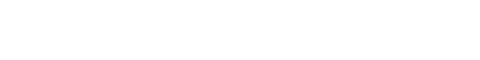
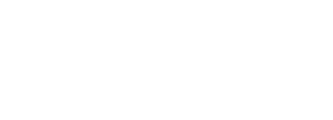
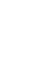
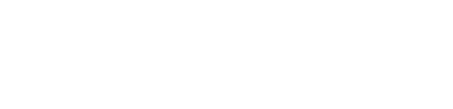
Enseñamos a las máquinas a ver y a entender.
-
Ver y describir
Lee textos, describe escenas y reconoce productos y códigos.
En UNBLIND y Alba Labs -
Detectar e inspeccionar
Encuentra objetos, piezas y defectos, y sigue lo que se mueve.
En Vision Ops y soluciones a la medida -
Medir y contar
Convierte una imagen en medidas, tiempos y conteos con evidencia.
En Vision Ops y Surface Ops -
Orientarse
Reconoce estrellas y entornos para saber dónde está y hacia dónde mira.
En Alba Space
Alba Vision
Visión e inteligencia artificial aplicada, de un laboratorio a un negocio.
-
Lentes con inteligencia artificial para personas con discapacidad visual: leen, describen y te orientan con audio 3D. Aquí empezó Alba.
-
Analítica de datos con visión: del vídeo de tus cámaras a tiempos, zonas y hallazgos, con el fotograma que respalda cada número. Empezamos por restaurantes. Sin reconocimiento facial.
-
Diseñamos sistemas de visión a la medida y asesoramos en visión, IA y emprendimiento. Para la Universidad Anáhuac integramos visión a una máquina de laboratorio: el resultado, una inspección de muestras consistente y trazable.
- Diagnóstico
- Piloto
- Integración
- Escalamiento
-
IA aplicada a la atención por WhatsApp. Órbita contesta a tus clientes, consulta tu menú y tus precios, arma la cotización y, cuando el cliente confirma, deja la solicitud lista para que tu equipo la revise. Hoy en piloto con Sankalpa.
-
Lentes abiertos con cámara para crear tus propias aplicaciones de visión e IA. Y estamos diseñando lentes industriales para mantenimiento, inspección y documentación; por ahora van como piloto bajo pedido.
-
Mide un bache con una foto: la oficina recibe el contorno, el área, el corte y la ubicación, sin cinta ni croquis. Funciona sin señal y entrega PDF y archivos para AutoCAD.
Alba Space. Percepción más allá.
Un instrumento 3 en 1 para satélites pequeños: una sola cámara que se orienta con las estrellas, detecta basura espacial y guía el acoplamiento con otro vehículo.
Orientarse con las estrellas
Fotografía el cielo, reconoce las estrellas y calcula hacia dónde apunta el satélite, sin saber nada antes.
Detectar basura espacial
Compara fotos seguidas, aísla lo que se mueve entre las estrellas y reporta su trayectoria.
Acercarse y acoplarse
Al extender su baffle cambia la distancia focal y pasa del cielo completo a una vista cercana del objetivo.
Star Tracker Ark Light 1 · diseño de vuelo, en integración de laboratorio
¿Qué quieres ver?
Platícanos tu reto y te decimos con honestidad si lo podemos resolver con visión.